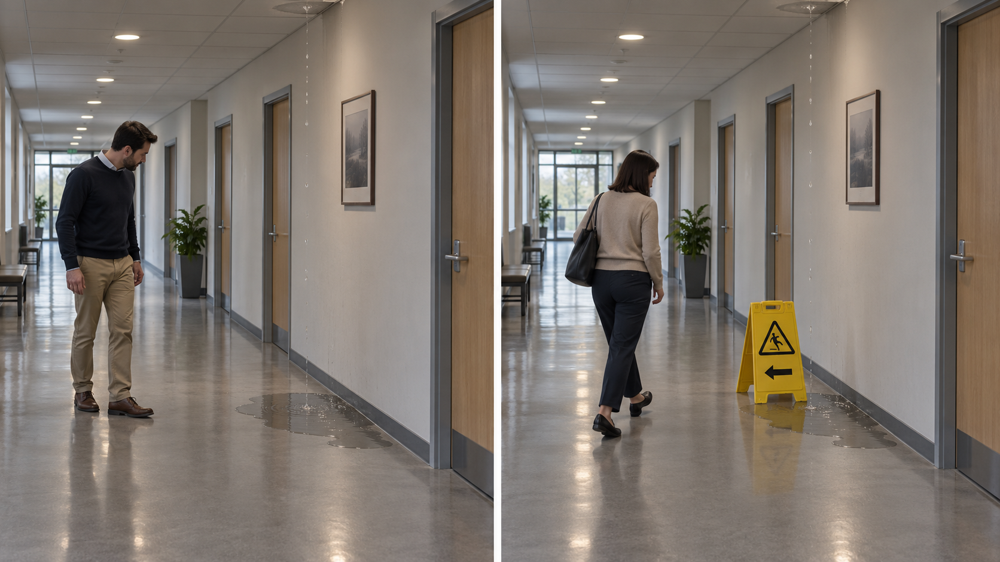

PLANO DE ESTUDO LINGUÍSTICO E DA LÍNGUA PORTUGUESA
TÓPICO 1.1 • FUNDAMENTOS DA LINGUAGEM
LINGUAGEM E COMUNICAÇÃO
APOSTILA DE ESTUDO — 2026
Texto Teórico
· Parte 1
Do acontecimento perceptível à comunicação
1. Um acontecimento pode informar sem comunicar
Uma porta bate com força.
O acontecimento, considerado apenas fisicamente, é simples: a porta se movimenta, encontra o batente e produz um ruído. Mas duas ocorrências muito semelhantes podem ocupar lugares bastante diferentes em nossa experiência.
Na primeira situação, uma corrente de vento atravessa a casa e empurra a porta.
Na segunda, durante uma discussão, uma pessoa abandona o cômodo e fecha a porta violentamente.
Nos dois casos há movimento, impacto e som. Ainda assim, dificilmente tratamos as duas situações da mesma maneira. No primeiro caso, o ruído pode levar alguém a procurar uma janela aberta. No segundo, o fechamento da porta pode ser relacionado ao comportamento de uma pessoa: talvez expresse irritação, desejo de encerrar a conversa, impaciência ou simplesmente pressa ao sair.
Antes de decidir qual interpretação é correta, há uma diferença mais elementar a perceber.
Algo aconteceu e tornou-se perceptível.
Chamaremos de acontecimento perceptível qualquer ocorrência que, numa situação, possa ser percebida por alguém: um ruído, um movimento, uma mudança de luz, um cheiro, uma marca no chão, uma expressão corporal.
O fato de percebermos algo, porém, não significa que estejamos apenas registrando suas propriedades físicas. Muitas vezes, aquilo que percebemos permite conhecer ou suspeitar de algo que não está diretamente diante de nós.
Imagine uma coluna de fumaça aparecendo atrás de uma mata. O fogo não está visível. Ainda assim, quem observa a fumaça pode concluir que existe alguma combustão naquela direção.
A fumaça, nesse caso, funciona como indício.
Em sentido amplo, chamaremos de indício uma ocorrência perceptível que, por estar relacionada a outra ocorrência ou estado de coisas, fornece elementos para chegarmos a uma conclusão.
Pegadas na lama podem indicar que alguém passou por determinado lugar. Folhas molhadas podem indicar que choveu recentemente. Uma janela quebrada pode indicar que sofreu algum impacto.
Em todos esses casos, existe algo perceptível a partir do qual obtemos informação.
Aqui, informação será empregada também em sentido amplo: aquilo que alguém pode conhecer ou concluir com base no que percebe. Não estamos utilizando o significado técnico que essa palavra possui em outros campos de estudo.
A distinção é importante:
obter informação a partir de alguma coisa não significa, por si só, que essa coisa esteja comunicando.
A fumaça não precisa ter surgido com a finalidade de avisar alguém sobre o fogo. As pegadas não precisam ter sido deixadas para informar a passagem de uma pessoa. O vento não bate a porta para contar aos moradores que uma janela ficou aberta.
Nesses casos, alguém utiliza uma ocorrência como fonte de informação, mas não existe necessariamente uma relação comunicativa.
Esse ponto parece simples até percebermos sua consequência. Se chamássemos de comunicação qualquer situação em que alguém consegue interpretar alguma coisa, praticamente tudo poderia comunicar: nuvens escuras, cicatrizes numa árvore, a temperatura de uma parede, a posição do Sol, uma falha numa máquina.
Todos esses fenômenos podem fornecer informação. Mas isso tornaria a palavra comunicação tão ampla que perderíamos uma diferença importante entre interpretar acontecimentos do mundo e participar de uma relação em que manifestações circulam entre participantes.
O problema, então, muda:
o que aparece quando deixamos de observar apenas acontecimentos e passamos a observar uma interação?
2. Quando entra uma interação?
Retomemos a porta.
Uma corrente de vento a fecha com violência.
Nesse caso, podemos investigar a causa do movimento. Talvez uma janela aberta tenha criado uma corrente de ar. O ruído nos informa sobre uma possível condição do ambiente.
Agora modifiquemos apenas parte da situação.
Duas pessoas discutem. Uma delas se levanta, atravessa a sala e fecha violentamente a porta ao sair.
O som continua sendo produzido pelo choque da porta contra o batente. Mas existe agora algo que não estava presente no primeiro caso: o acontecimento faz parte da conduta de um participante diante de outro dentro de uma situação social.
Isso altera o problema.
A pessoa que permaneceu na sala pode relacionar o fechamento da porta à discussão que acabou de ocorrer. O movimento pode ser compreendido como irritação, ruptura, impaciência ou recusa em continuar conversando.
Não precisamos ainda decidir exatamente qual dessas interpretações é a melhor. Basta perceber que a porta deixou de ser apenas um objeto movimentado por uma força física. O modo como foi fechada pode tornar-se relevante para aquilo que ocorre entre os participantes.
Chamaremos de manifestação aquilo que se torna perceptível na conduta ou na produção de um participante e pode entrar na relação com outros participantes.
Uma palavra pronunciada é uma manifestação. Um bilhete deixado sobre uma mesa também. Um gesto dirigido a alguém, um toque deliberado de campainha ou um movimento corporal durante uma conversa podem igualmente tornar-se manifestações relevantes.
Isso não significa que tudo o que uma pessoa faz seja automaticamente uma mensagem.
Uma pessoa pode coçar o braço porque sentiu coceira. Pode espirrar. Pode tropeçar. Pode mudar de posição numa cadeira simplesmente porque estava desconfortável.
O fato de esses acontecimentos envolverem seres humanos não basta para transformá-los em comunicação.
O que começa a distinguir uma interação comunicativa é a existência de uma relação entre participantes na qual alguma manifestação se torna disponível e relevante para aquilo que um deles pode compreender ou fazer.
Um contraste ajuda a tornar essa diferença mais precisa.
Imagine novamente uma coluna de fumaça.
Quem a observa pode concluir:
Há fogo naquela direção.
Agora imagine um alarme de incêndio instalado num edifício. Quando determinado sistema detecta fumaça, uma sirene começa a tocar.
O alarme também fornece informação sobre perigo. Mas sua relação com os participantes é diferente da relação da fumaça natural.
A fumaça resulta do próprio processo de combustão. Não precisa existir para ser percebida nem para avisar alguém.
O alarme, ao contrário, foi projetado, instalado e reconhecido socialmente para tornar uma situação de perigo perceptível aos ocupantes do edifício e orientar seu comportamento.
Mesmo que a sirene seja acionada automaticamente — sem uma pessoa apertando um botão naquele instante — sua existência naquela situação não é acidental. Há uma prática humana que lhe atribuiu uma função: avisar.
Assim, fumaça e alarme podem levar alguém a obter informação semelhante, mas não o fazem do mesmo modo.
A fumaça pode ser um indício de perigo.
O alarme participa de uma prática organizada para comunicar perigo.
Essa distinção impede que informar e comunicar sejam usados como se fossem sempre a mesma coisa.
Comparação conceitual: obter informação e participar de uma relação comunicativa não são a mesma coisa.
3. O problema da intenção
Uma pessoa conversa com outra antes de uma apresentação importante e afirma:
Estou tranquila.
Enquanto fala, porém, suas mãos tremem.
A frase foi deliberadamente produzida. O tremor provavelmente não.
Ainda assim, quem participa da conversa pode perceber ambas as manifestações. A fala aponta numa direção; o comportamento corporal pode contribuir para uma impressão diferente.
Seria inadequado concluir automaticamente:
“as mãos comunicaram nervosismo”
como se o tremor fosse uma mensagem conscientemente produzida e possuísse uma tradução fixa.
Talvez a pessoa esteja nervosa. Talvez sinta frio. Talvez exista outra causa. O comportamento permite interpretações, mas não entrega sozinho uma explicação segura.
Por outro lado, seria igualmente inadequado afirmar que o tremor não possui importância alguma para a comunicação apenas porque não foi planejado.
A conversa já existe. Há participantes orientados um para o outro. Dentro dessa interação, aspectos não deliberados do comportamento podem afetar a maneira como aquilo que é dito é recebido.
Para lidar com casos assim, é útil distinguir comunicação deliberada de relevância comunicativa.
Há manifestações deliberadamente produzidas para orientar outra pessoa:
“Cuidado!”
um toque na campainha;
uma mão levantada para pedir a palavra;
um aviso deixado sobre uma porta.
Nesses casos, existe uma orientação comunicativa relativamente clara. O participante faz algo de modo que outro possa perceber e interpretar.
Mas uma interação humana não é formada apenas por aquilo que seus participantes planejam conscientemente. Uma pausa inesperada, uma voz trêmula, um afastamento corporal ou um silêncio prolongado podem tornar-se relevantes para o modo como a situação se desenvolve.
Chamaremos essa possibilidade de relevância comunicativa.
A expressão não significa que todo movimento involuntário seja uma mensagem. Ela serve para reconhecer algo mais restrito: uma vez inseridos numa interação, certos aspectos perceptíveis da conduta podem influenciar a interpretação dos participantes mesmo sem terem sido produzidos com uma intenção comunicativa consciente e específica.
Essa distinção evita dois extremos.
O primeiro seria afirmar:
Sem intenção consciente, não existe nada comunicativamente relevante.
Isso excluiria da análise aspectos que efetivamente interferem nas interações humanas.
O segundo seria afirmar:
Tudo aquilo que alguém consegue interpretar é comunicação.
Isso apagaria a diferença entre uma pessoa perceber nervosismo na voz de um interlocutor e uma pessoa perceber chuva pelas nuvens.
Nos dois casos há interpretação de algo perceptível. Mas apenas no primeiro existe uma interação humana dentro da qual aquela manifestação pode alterar o entendimento entre participantes.
A intenção, portanto, importa, mas não funciona como um interruptor que divide mecanicamente o mundo em duas classes absolutas.
Há casos muito claros de produção deliberadamente comunicativa. Há ocorrências naturais que apenas fornecem informação. Entre esses extremos, existem comportamentos humanos cuja relevância depende da relação em que aparecem.
Retornemos à porta.
Se uma pessoa, durante uma discussão, pensa:
“vou bater a porta para mostrar que não quero mais conversar”
temos um caso bastante claro de manifestação deliberadamente orientada a outro participante.
Mas talvez ela apenas saia irritada e feche a porta com força, sem formular qualquer propósito de “enviar uma mensagem”. Ainda assim, quem permaneceu na sala pode relacionar o gesto ao conflito.
Nesse segundo caso, é mais cuidadoso dizer que o fechamento da porta adquiriu relevância comunicativa na interação do que afirmar, sem outras evidências, que a pessoa decidiu comunicar exatamente uma determinada mensagem.
Essa cautela importa porque comportamentos não possuem traduções automáticas.
Braços cruzados não significam necessariamente resistência. Silêncio não significa necessariamente concordância. Uma pessoa que evita olhar para outra não está necessariamente mentindo.
A manifestação é observável. A intenção atribuída a ela já é uma interpretação.
Essa diferença será importante sempre que analisarmos relações humanas: precisamos evitar transformar uma possibilidade interpretativa em certeza sobre aquilo que ocorre na mente de outra pessoa.
Por enquanto, basta fixar uma regra de prudência:
quanto menos sabemos sobre a situação e sobre a relação entre os participantes, menos devemos afirmar sobre a intenção associada a uma manifestação.
Isso não impede a interpretação. Impede apenas que a interpretação ultrapasse as evidências disponíveis.
Já possuímos agora as distinções necessárias para formular, sem simplificar demais, o conceito que orienta este percurso.
4. Uma definição de trabalho de comunicação
Até aqui observamos quatro situações.
Uma porta bate por causa do vento.
Uma coluna de fumaça permite suspeitar de fogo.
Um alarme soa para advertir pessoas de um perigo.
Uma pessoa fecha violentamente a porta durante uma discussão.
A primeira mostra que algo pode simplesmente acontecer e ser percebido.
A segunda mostra que um acontecimento pode fornecer informação sobre outra coisa sem ter sido produzido para informar.
A terceira apresenta uma prática criada para tornar determinada informação acessível e orientar outras pessoas.
A quarta mostra que, entre seres humanos, uma manifestação pode entrar numa interação mesmo quando não sabemos se cada aspecto dela foi conscientemente planejado.
Podemos, então, adotar uma formulação suficientemente precisa para este percurso.
Esta é uma definição de trabalho. Sua função é fornecer uma ferramenta adequada a este percurso, não declarar encerradas todas as discussões teóricas possíveis sobre comunicação.
Algumas consequências da definição merecem ser examinadas.
Primeiro, comunicação é apresentada como processo social.
Isso delimita nosso objeto. Estamos interessados aqui na comunicação humana e nas relações construídas entre participantes. O fato de outras áreas utilizarem a palavra comunicação para fenômenos biológicos, tecnológicos ou informacionais não nos obriga a tratar todos esses usos como se fossem teoricamente idênticos.
Uma intenção inteiramente privada não pode, por si só, participar da relação com outra pessoa. Para que alguém tenha algo com que trabalhar, alguma manifestação precisa ficar disponível: uma expressão, um som, uma inscrição, um movimento, uma alteração observável.
Isso não significa que o outro compreenderá necessariamente aquilo que se pretendia.
Significa apenas que existe algo a partir do qual uma relação comunicativa pode se desenvolver.
Terceiro, a definição envolve participantes.
Essa condição permite distinguir uma interação humana de um acontecimento natural do qual alguém simplesmente obtém informação.
A chuva pode molhar a rua e permitir que uma pessoa descubra que choveu. A chuva não precisa, por isso, ser tratada como participante de uma conversa.
Uma pegada pode informar que alguém passou por determinado lugar. Se, porém, uma pessoa deixa deliberadamente marcas combinadas para que outra siga seu caminho, a situação muda: uma ocorrência material semelhante passa a integrar uma prática entre participantes.
Quarto, nem todas as manifestações possuem o mesmo estatuto.
Um pedido deliberadamente formulado e um tremor involuntário das mãos não devem ser confundidos. Ambos podem ser relevantes durante uma interação, mas por razões diferentes.
Por isso, a definição não diz simplesmente:
“tudo o que um participante faz comunica”.
Ela diz que manifestações podem entrar numa relação comunicativa e adquirir funções diferentes dentro dela.
Essa formulação preserva a diferença entre aquilo que foi deliberadamente produzido e aquilo que foi apenas incorporado à interpretação pelos participantes.
Quinto, comunicação não exige que tudo termine em entendimento perfeito.
Uma pessoa pode produzir uma manifestação comunicativa e ser mal compreendida. Pode ser compreendida apenas em parte. Pode tentar orientar determinada interpretação e provocar outra.
A existência dessas possibilidades não destrói a comunicação; mostra apenas que participar de uma relação comunicativa não é o mesmo que garantir seu resultado.
Podemos testar a definição em casos novos.
Uma pessoa entra numa cozinha e percebe cheiro de queimado.
O cheiro pode fornecer informação: alguma coisa talvez esteja queimando. Não precisamos supor que alguém produziu o cheiro para avisá-la.
Agora outra pessoa grita da sala:
“O forno!”
Há uma manifestação deliberadamente produzida entre participantes, orientada para que alguém perceba uma situação e talvez aja sobre ela.
Em outro caso, durante uma conversa difícil, uma pessoa permanece em silêncio e começa a chorar.
Não sabemos apenas pela observação qual é sua intenção. Talvez não tenha decidido manifestar nada. Mesmo assim, numa interação já em curso, o choro pode alterar aquilo que o outro diz, faz ou compreende.
Finalmente, imagine uma pedra que cai de uma encosta e bloqueia uma estrada.
A pedra pode informar aos viajantes que ocorreu um deslizamento. Pode obrigá-los a mudar de percurso. Pode produzir efeitos importantes sobre seu comportamento.
Nada disso, por si só, transforma a pedra em participante de uma comunicação.
Os casos revelam por que não basta perguntar:
“Isso produz algum sentido para alguém?”
A pergunta precisa ser mais cuidadosa:
Que tipo de relação existe entre aquilo que foi percebido, os participantes e a situação?
Às vezes estamos apenas retirando informação de um acontecimento.
Às vezes encontramos uma manifestação deliberadamente produzida para orientar outra pessoa.
Às vezes uma interação já existente incorpora aspectos não planejados da conduta de seus participantes.
Distinguir esses casos não exige uma fórmula mecânica. Exige observar o que efetivamente está disponível e evitar atribuir ao fenômeno mais do que as evidências permitem.
Chegamos, assim, a uma primeira estrutura para pensar a comunicação humana:
perceber alguma coisa não é o mesmo que receber uma comunicação;
obter informação não é o mesmo que participar de uma interação comunicativa;
uma manifestação humana não precisa ser inteiramente planejada para adquirir relevância dentro de uma interação;
e reconhecer relevância comunicativa não autoriza transformar toda interpretação possível em certeza sobre a intenção de outra pessoa.
Essas distinções resolvem a primeira dificuldade. Mas deixam outra intacta.
Mesmo quando sabemos que existe uma relação comunicativa, aquilo que um participante torna perceptível não chega ao outro acompanhado de uma interpretação pronta. Entre a manifestação produzida e aquilo que outra pessoa compreende ainda existe um problema a explicar:
como algo que foi tornado perceptível passa a ser interpretado por outra pessoa?
Texto Teórico
· Parte 2
Comunicação como processo de interpretação
1. O outro não recebe diretamente uma experiência
Numa interação, alguma coisa se torna perceptível entre os participantes. Mas isso ainda não explica como alguém chega a compreender outra pessoa.
Considere uma frase simples:
Estou preocupado.
A preocupação sentida por quem fala não se desloca até o interlocutor. O que se torna disponível é uma manifestação: neste caso, uma sequência de palavras pronunciadas ou escritas. A experiência de preocupação e a manifestação utilizada para expressá-la não são a mesma coisa.
Essa diferença existe também quando não há palavras. Uma pessoa pode estar cansada e fechar os olhos; sentir medo e recuar; desejar sair e olhar repetidamente para a porta. Aquilo que outra pessoa consegue perceber são movimentos, sons, palavras, pausas e outras manifestações. O estado ou a intenção que podem estar relacionados a elas não aparecem diretamente diante do observador.
Por isso, é útil separar duas coisas desde o início:
experiência ou intenção
≠ manifestação perceptível
Essa separação não significa que experiências interiores sejam incomunicáveis. Significa algo mais preciso: para participarem de uma relação com outra pessoa, elas precisam deixar algum tipo de manifestação disponível.
Mas uma nova dificuldade surge imediatamente. Mesmo que a manifestação seja percebida com precisão, sua interpretação pode não coincidir com aquilo que ocorreu ou com aquilo que o participante pretendia.
Imagine uma conversa em que alguém olha repetidamente para a porta.
O movimento pode ser observado sem grande dificuldade: a pessoa desviou os olhos várias vezes naquela direção. A partir daí, porém, começam as hipóteses. Talvez deseje sair. Talvez espere alguém. Talvez tenha ouvido um ruído. Talvez simplesmente esteja olhando distraidamente para aquele ponto da sala.
O acontecimento observado permanece o mesmo. O que varia é aquilo que tentamos compreender a partir dele.
Perceber uma manifestação, portanto, não é ainda interpretá-la.
2. Perceber não é interpretar
Essa diferença torna-se particularmente clara no início de Dom Casmurro.
Durante uma viagem de trem, um jovem conhecido de Bentinho senta-se ao seu lado, conversa com ele e termina recitando versos. O próprio narrador informa que estava cansado e que:
“fechei os olhos três ou quatro vezes”
Segundo o relato, isso foi suficiente para que o rapaz interrompesse a leitura e guardasse os versos. Quando Bentinho pede que continue, recebe como resposta que a recitação já havia terminado. Pouco depois, o jovem passa a tratá-lo de maneira hostil e lhe atribui o apelido que dará título ao romance.
Fonte do corpus: Machado de Assis, Dom Casmurro, cap. I, “Do título”.
Há pelo menos três níveis diferentes nessa pequena cena.
O primeiro é aquilo que o jovem efetivamente pode perceber: Bentinho fecha os olhos durante a recitação.
O segundo é a explicação fornecida pelo próprio narrador: ele afirma estar cansado e depois resume o episódio dizendo que tudo ocorreu por estar cochilando.
O terceiro é aquilo que o comportamento parece significar para o rapaz. Sua interrupção, o fato de guardar os versos e permanecer amuado mostram que ele não recebeu os olhos fechados como simples efeito neutro do cansaço.
O rapaz não precisava enxergar os olhos de Bentinho de maneira incorreta para compreender mal a situação. Pode ter percebido perfeitamente o movimento físico.
O problema aparece depois da percepção.
Fechar os olhos é uma manifestação observável.
Fechar os olhos porque a recitação é desagradável já é uma interpretação de sua causa ou de sua relevância.
É justamente por isso que uma descrição cuidadosa precisa separar:
o que foi observado
de o que foi concluído a partir do que foi observado.
Essa diferença parece pequena, mas altera profundamente a análise.
Se alguém diz:
Bentinho fechou os olhos.
temos uma afirmação diretamente sustentada pelo episódio.
Se diz:
Bentinho quis demonstrar desprezo pelos versos.
a afirmação é muito mais forte. Ela atribui uma intenção. No relato, porém, Bentinho fornece outra explicação para sua conduta.
Não temos, portanto, uma passagem automática:
olhos fechados = desprezo.
Temos uma manifestação que, naquela situação, permitiu ao outro construir determinada compreensão.
O caso mostra que percepção correta não garante interpretação correta.
Também mostra algo mais importante: um mal-entendido não precisa começar porque alguém deixou de ouvir, ver ou perceber alguma coisa. Ele pode surgir justamente depois que a manifestação foi percebida.
Perceber uma manifestação não é ainda interpretá-la: a interpretação relaciona o que foi percebido à situação e aos conhecimentos disponíveis.
3. Intenção, interpretação e mal-entendido
A intenção ocupa um lugar importante numa interação, mas não deve ser confundida com aquilo que o outro efetivamente compreende.
Uma pessoa pode querer tranquilizar alguém e acabar produzindo preocupação.
Pode pretender fazer uma brincadeira e ser recebida como ofensiva.
Pode desejar encerrar uma conversa de maneira discreta e ser interpretada como hostil.
Pode até não ter pretendido comunicar determinado estado, mas ver seu comportamento incorporado à interpretação do outro.
Isso ocorre porque a intenção de um participante não fica diretamente disponível para inspeção. O outro trabalha com manifestações.
Em muitos casos, reconstruir uma intenção é uma hipótese interpretativa.
Se durante uma conversa alguém começa a olhar insistentemente para a porta, pode ser razoável pensar que deseja sair. Mas a manifestação isolada não garante essa conclusão.
Novas informações podem fortalecê-la.
Imagine que a pessoa também consulte o relógio, responda de maneira cada vez mais breve e já tenha mencionado que precisa pegar um ônibus em poucos minutos.
A hipótese:
ela provavelmente deseja encerrar a conversa
agora possui mais apoio.
Isso não ocorre porque uma palavra mágica chamada “contexto” foi acrescentada ao exemplo. O que mudou foi o conjunto concreto de informações disponíveis.
Temos:
o olhar repetido para a porta;
a consulta ao relógio;
a redução das respostas;
a informação anterior sobre o horário do ônibus.
Esses elementos convergem para uma interpretação.
Se descobrimos, porém, que a pessoa estava esperando alguém entrar pela mesma porta, uma parte importante da interpretação precisa ser revista.
A situação, portanto, não funciona como um pano de fundo decorativo. Ela fornece elementos com os quais os participantes relacionam aquilo que percebem.
O episódio de Dom Casmurro mostra o mesmo mecanismo sob outra forma.
O jovem possui evidências reais: Bentinho efetivamente fecha os olhos enquanto seus versos estão sendo recitados. Sua leitura da situação não nasce do nada. Há uma base observável para que ele suspeite de desinteresse.
Mas a base é insuficiente para tornar essa conclusão certa.
Bentinho oferece outra informação relevante: estava cansado.
É por isso que o caso não deve ser reduzido a:
o rapaz interpretou errado.
Mais precisamente, ele construiu uma interpretação plausível a partir de elementos insuficientes e tratou essa interpretação como se revelasse de maneira segura o estado de Bentinho.
O mal-entendido é valioso justamente porque separa aquilo que uma interação cotidiana costuma fundir.
Podemos distinguir, em nível inicial:
intenção — aquilo que um participante pretende realizar, quando existe uma intenção identificável;
manifestação — aquilo que efetivamente se torna perceptível;
interpretação — aquilo que outro participante compreende a partir das manifestações e das informações disponíveis;
efeito — aquilo que essa interpretação ou manifestação produz no desenvolvimento da interação.
Esses quatro níveis podem convergir, mas não precisam fazê-lo.
Em Dom Casmurro, o fechar dos olhos produz um efeito real independentemente de ter sido planejado para isso: o rapaz interrompe a recitação e fica ofendido.
O efeito, portanto, não prova a intenção.
Do mesmo modo, a interpretação do rapaz não transforma automaticamente sua hipótese em descrição verdadeira do estado de Bentinho.
Essa distinção também explica por que um mal-entendido continua pertencendo à comunicação.
Não ocorreu ausência completa de interpretação. O rapaz percebeu algo, atribuiu-lhe sentido e agiu de acordo com o que compreendeu.
O problema foi justamente haver entendimento sem correspondência suficiente entre aquilo que um participante vivenciava e aquilo que outro atribuiu à sua manifestação.
A comunicação não fracassou porque nenhum sentido foi construído.
O desencontro surgiu porque um sentido foi construído.
4. Interpretar é relacionar
Há situações em que a interpretação depende tão claramente daquilo que alguém já sabe que um elemento isolado parece quase pobre demais para explicar a conclusão obtida.
No início de As Duas Torres, Aragorn procura os companheiros depois que o grupo se dispersa.
Do alto de Amon Lhaw, ele começa a ouvir sons vindos da floresta. Primeiro distingue gritos. Entre eles, reconhece vozes de orcs. Então uma corneta soa acima do ruído da cachoeira.
A reação é imediata:
“A corneta de Boromir! [...] Ele está em apuros!”
Enquanto Aragorn corre na direção do som, os gritos ficam mais nítidos e a corneta passa a soar mais fraca e desesperada.
Fonte do corpus: J. R. R. Tolkien, O Senhor dos Anéis, Terceira Parte, cap. I, “A Partida de Boromir”, tradução de Lenita Maria Rimoli Esteves e Almiro Pisetta.
A corneta, considerada apenas como ocorrência acústica, não pronuncia:
Boromir está cercado por inimigos e precisa de ajuda.
Aragorn também não chega à conclusão apenas porque ouviu qualquer instrumento de sopro.
Diversas informações já estavam disponíveis.
Ele reconhece a corneta como sendo de Boromir.
O som vem da região onde os companheiros se encontram dispersos.
Antes do toque, Aragorn já escuta gritos e identifica vozes de orcs.
Depois, ouve o chamado enfraquecer enquanto os urros aumentam.
A interpretação:
Boromir está em apuros
não está contida numa única propriedade do som. Ela surge da relação entre a manifestação percebida e uma rede de informações que Aragorn consegue mobilizar naquela situação.
Esse exemplo realiza o movimento inverso ao de Dom Casmurro.
No trem, uma manifestação real recebe uma interpretação que vai além do que as evidências permitem afirmar com segurança.
Na floresta, diferentes indícios convergem. O reconhecimento da corneta, a presença dos orcs e a progressão dos sons tornam a interpretação de Aragorn fortemente sustentada.
Isso permite estabelecer uma distinção importante:
interpretação possível ≠ interpretação sustentada
Uma interpretação é possível quando os elementos disponíveis não a excluem.
Ela se torna mais sustentada quando consegue explicar conjuntamente um número maior de evidências sem entrar em conflito com elas.
Considere apenas o primeiro elemento do episódio:
uma corneta soa ao longe.
Sem outras informações, muitas explicações seriam possíveis: cerimônia, convocação, treino, aviso, música, combate.
Agora acrescente:
Aragorn reconhece a corneta de Boromir.
O campo se reduz.
Acrescente:
há gritos e vozes de orcs.
Algumas hipóteses ganham muito mais força.
Acrescente:
o toque enfraquece enquanto os gritos aumentam.
A conclusão de perigo torna-se ainda mais bem sustentada.
Interpretar, portanto, não significa escolher livremente um sentido entre infinitas possibilidades. Significa relacionar aquilo que foi percebido às demais informações disponíveis e avaliar que compreensão elas permitem sustentar.
É nesse sentido que a situação orienta a interpretação.
Não porque exista uma entidade abstrata chamada “contexto” que automaticamente forneça a resposta, mas porque participantes dispõem de informações diferentes e conseguem estabelecer relações diferentes entre elas.
Uma pessoa completamente estranha à história poderia ouvir exatamente o mesmo som que Aragorn e não identificar Boromir.
Ela teria acesso a parte da mesma manifestação acústica, mas não ao mesmo conjunto de conhecimentos.
Mesma percepção física não implica necessariamente mesma interpretação.
Ao mesmo tempo, conhecimento compartilhado não garante concordância absoluta. Participantes podem lembrar acontecimentos diferentes, atribuir pesos diferentes aos indícios ou possuir expectativas incompatíveis.
A situação orienta e limita a interpretação; não a transforma num resultado mecânico.
5. Interpretar não é inventar
Chegamos, assim, a um problema que precisa ser resolvido com cuidado.
Se o sentido não chega pronto, seria possível concluir que cada pessoa simplesmente cria aquilo que deseja compreender?
Não.
A interpretação é uma construção, mas uma construção orientada e restringida por evidências.
Retomemos o olhar dirigido à porta.
Se alguém olha para ela uma única vez durante uma conversa, afirmar:
essa pessoa está desesperada para ir embora
é uma conclusão muito mais forte do que a manifestação permite.
Podemos formulá-la como possibilidade, mas não como certeza.
Se o olhar se repete, a pessoa verifica o horário, encurta suas respostas e já afirmou que precisa sair, a mesma interpretação recebe apoio maior.
A diferença não está apenas no número de elementos. Está na maneira como eles convergem.
Interpretar bem exige perguntar:
O que efetivamente foi percebido?
Que conclusão estou acrescentando ao que foi percebido?
Que elementos sustentam essa conclusão?
Há informações que a enfraquecem ou permitem outra leitura?
Essas perguntas impedem dois erros opostos.
O primeiro consiste em imaginar que o sentido está completamente armazenado na manifestação, bastando “retirá-lo” dali.
O segundo consiste em imaginar que, como o sentido precisa ser construído, qualquer interpretação pode ser defendida com a mesma força.
Dom Casmurro e As Duas Torres mostram por que nenhuma dessas posições é suficiente.
O jovem do trem não inventa seu desagrado a partir de nada: os olhos fechados de Bentinho fornecem um indício. Seu erro está em atribuir ao indício força maior do que ele possui.
Aragorn, por sua vez, também constrói uma interpretação. Mas dispõe de uma convergência de elementos que a sustenta fortemente: reconhece a corneta, escuta inimigos, percebe a situação de combate e acompanha a mudança no próprio toque.
Nos dois casos há interpretação.
O que muda é a relação entre a conclusão e as evidências disponíveis.
Podemos representar esse princípio de maneira simples:
A seta aqui não significa que as evidências produzem automaticamente uma única interpretação. Significa que uma conclusão responsável deve poder mostrar de onde retira sua força.
Uma leitura pode ser plausível sem ser certa.
Duas leituras podem ser compatíveis com o mesmo dado sem possuírem exatamente a mesma força.
Novas informações podem confirmar, enfraquecer ou modificar uma interpretação anterior.
É justamente por isso que compreender outra pessoa frequentemente envolve revisão.
Quando uma reação revela que houve desencontro, os participantes podem acrescentar informações, reformular aquilo que disseram, corrigir uma hipótese ou tentar esclarecer o que pretendiam.
O entendimento, quando ocorre, não precisa aparecer pronto no primeiro contato. Pode ser construído e reajustado ao longo da interação.
A comunicação humana fica então mais clara se distinguirmos os níveis envolvidos:
uma pessoa pode ter uma experiência ou intenção;
alguma manifestação torna-se perceptível;
outra pessoa a percebe;
relaciona-a ao que sabe e à situação;
constrói uma interpretação;
e essa interpretação pode produzir efeitos que coincidem ou não com aquilo que o primeiro participante esperava.
Nada disso significa que toda interação seja incerta ou difícil. Grande parte das comunicações cotidianas funciona com rapidez justamente porque os participantes compartilham muitos recursos, hábitos e conhecimentos.
Mas essa facilidade não elimina o processo interpretativo.
Ela apenas o torna menos visível.
O mal-entendido revela a distância entre manifestação e interpretação. Uma interpretação bem sustentada revela como essa distância pode ser percorrida com base em elementos disponíveis.
Assim, duas pessoas podem perceber corretamente a mesma manifestação e chegar a entendimentos diferentes porque não interpretam a partir da manifestação isolada: relacionam-na a situações, conhecimentos, expectativas e indícios que podem não coincidir.
Isso não torna toda leitura equivalente.
Quanto melhor uma interpretação explica aquilo que efetivamente está disponível — e quanto menos precisa ignorar ou contradizer as evidências —, maior é sua sustentação.
Resta, então, uma questão mais fundamental.
Se seres humanos não transferem experiências prontas entre si, mas precisam torná-las de algum modo perceptíveis e interpretáveis, que papel a linguagem exerce nesse processo?
Texto Teórico
· Parte 3
Linguagem: organizar recursos para produzir sentidos
1. Comunicação e linguagem não são a mesma coisa
Uma interação comunicativa exige que alguma coisa se torne perceptível e possa ser interpretada pelos participantes. Mas essa descrição ainda deixa uma questão sem resposta.
Considere estas manifestações:
Silêncio.
Espere.
Espere aqui.
Espere aqui até eu voltar.
Em todos os casos, algo pode tornar-se relevante numa interação. Entretanto, as formas não oferecem exatamente as mesmas possibilidades. À medida que elementos são relacionados, torna-se possível especificar com maior precisão uma ação, um lugar, uma duração, uma condição ou outras relações.
Isso revela um aspecto que o conceito de comunicação, sozinho, não precisa explicar.
Como os recursos disponíveis são organizados para que determinadas interpretações se tornem possíveis?
É nesse ponto que convém distinguir comunicação e linguagem.
Comunicação diz respeito ao processo relacional em que manifestações entram numa interação entre participantes e podem orientar interpretações ou ações.
Linguagem, no sentido que construiremos aqui, diz respeito à capacidade e à atividade de organizar recursos de significação, tornando possível produzir e interpretar sentidos.
Os dois conceitos estão intimamente relacionados, mas respondem a problemas diferentes.
Uma conversa concreta é uma situação de comunicação. Para realizá-la, os participantes podem mobilizar recursos que não precisam ser inventados do zero a cada encontro: reconhecem formas, estabelecem relações entre elas, reutilizam maneiras de expressar certas diferenças e interpretam organizações semelhantes produzidas por outras pessoas.
Por isso, linguagem não é simplesmente outro nome para uma comunicação que aconteceu.
Também não é sinônimo de fala. Produzir sons com a voz é uma possibilidade importante, mas não esgota os meios pelos quais seres humanos tornam sentidos perceptíveis. Uma inscrição pode ser lida sem que ninguém fale. Um gesto pode orientar uma ação. Uma imagem pode destacar uma relação. Uma disposição espacial pode contribuir para aquilo que alguém percebe.
E linguagem também não deve ser confundida, neste nível, com uma língua particular. Português, espanhol e outras línguas particulares não esgotam o conceito mais amplo de linguagem adotado aqui.
A diferença pode ser expressa de maneira simples:
comunicação coloca participantes em relação; linguagem permite organizar recursos com os quais sentidos podem ser produzidos e interpretados nessa relação.
Isso não significa que possamos separar os dois fenômenos como se funcionassem independentemente. Em inúmeras situações humanas, linguagem e comunicação atuam conjuntamente. A distinção serve para tornar visíveis aspectos diferentes do mesmo acontecimento.
Quando duas pessoas conversam, por exemplo, podemos perguntar como a interação se desenvolve entre elas. Essa é uma questão sobre comunicação.
Também podemos perguntar como determinadas formas foram organizadas e reconhecidas para produzir aquilo que os participantes compreenderam. Essa é uma questão sobre linguagem.
2. Organizar é estabelecer relações
Dizer que a linguagem organiza recursos só é útil se entendermos o que organizar significa.
Compare:
chuva
chuva amanhã
talvez chova amanhã
Se chover amanhã, a viagem será adiada.
A primeira forma pode fazer reconhecer um fenômeno.
Ao acrescentarmos amanhã, passa a existir uma relação com um momento diferente.
Com talvez, a ocorrência deixa de ser apresentada da mesma maneira: aparece como possibilidade.
No último caso, a ocorrência da chuva é relacionada à realização da viagem: uma situação passa a depender da outra.
Não foi necessário abandonar completamente os elementos anteriores para produzir essas diferenças. O que mudou foi também a maneira como eles foram selecionados e relacionados.
É isso que torna a ideia de organização importante.
Os recursos de linguagem não funcionam simplesmente como uma pilha de peças independentes, cada uma carregando um sentido completo. Relações entre elementos participam daquilo que pode ser interpretado.
Considere uma mudança ainda menor:
A viagem será adiada se chover amanhã.
A viagem será adiada mesmo se chover amanhã.
A diferença de uma palavra modifica a relação apresentada entre chuva e viagem.
Não precisamos nomear formalmente essas estruturas para reconhecer o fenômeno: a maneira como os recursos são combinados participa da construção do sentido.
O mesmo princípio aparece fora de sequências de palavras.
Imagine que alguém precise indicar a saída de um edifício.
Pode dizer:
A saída fica à esquerda.
Pode apontar naquela direção.
Pode colocar uma seta num local visível.
Pode ainda relacionar mais de um desses recursos.
Cada realização torna alguma coisa perceptível de modo diferente. Sua utilidade depende da maneira como o recurso foi organizado e da capacidade dos participantes de reconhecê-lo.
Isso impede que linguagem seja entendida apenas como produção material de recursos perceptíveis.
Fazer um som não basta.
Traçar uma forma não basta.
Mover a mão não basta.
O mesmo movimento pode desempenhar funções diferentes em situações diferentes, e organizações diferentes de materiais semelhantes podem orientar interpretações diferentes.
Há ainda outra condição.
Suponha que uma pessoa desenhe numa folha:
◇
e decida, sozinha, que essa forma significará:
“encontre-me amanhã às seis horas na praça.”
A associação pode fazer sentido para quem a inventou. Mas, se ninguém mais possui qualquer meio de reconhecê-la, seu alcance na interação será mínimo.
Agora imagine que duas pessoas combinem previamente essa utilização. O mesmo desenho passa a possuir, entre elas, uma possibilidade que antes não tinha.
Não é a forma geométrica, isoladamente, que explica a diferença. Passa a existir algum grau de compartilhamento na maneira de utilizá-la.
A linguagem depende, portanto, não apenas de produzir recursos, mas de haver condições para que suas organizações possam ser reconhecidas por outros.
Isso não exige que todos conheçam exatamente as mesmas coisas nem interpretem tudo de maneira idêntica. Exige apenas regularidades suficientes para que uma produção não precise começar do zero a cada nova interação.
Se cada pessoa tivesse de inventar novamente todas as relações entre formas e sentidos a cada encontro, grande parte daquilo que reconhecemos e produzimos rapidamente teria de ser reconstruída do início.
A experiência comum mostra o contrário.
Aprendemos maneiras de produzir e interpretar sentidos que já circulam socialmente; reutilizamos organizações conhecidas; modificamos algumas delas; combinamos recursos disponíveis de maneiras novas. Há, portanto, uma relação entre regularidade e atividade concreta.
Regularidade não significa repetição mecânica.
É justamente porque existem formas relativamente reconhecíveis que podemos reorganizá-las e produzir manifestações que outra pessoa nunca encontrou exatamente daquela maneira.
3. O que chamaremos de linguagem
A palavra linguagem pode receber delimitações diferentes conforme o problema investigado. Para este percurso, precisamos de uma formulação ampla o bastante para não reduzi-la à fala ou a uma língua específica, mas restrita o bastante para não transformar qualquer acontecimento interpretável em linguagem.
Podemos então adotar a seguinte formulação:
Cada parte dessa definição realiza uma função.
Linguagem é apresentada como capacidade porque seres humanos conseguem aprender maneiras de produzir e interpretar organizações de recursos. Uma criança não precisa criar individualmente todas as formas que encontrará ao participar da vida social.
Mas linguagem também é atividade.
A capacidade torna-se concreta quando pessoas efetivamente produzem, combinam, percebem e interpretam manifestações. Linguagem não designa apenas uma possibilidade abstrata guardada no indivíduo; ela se realiza em práticas.
A definição fala ainda em organizar recursos.
Esse ponto impede que linguagem seja reduzida a uma coleção de recursos independentes. Uma parte importante da produção de sentido nasce das relações estabelecidas entre elementos: sua escolha, sua combinação, sua posição, sua sequência e sua relação com outras manifestações.
Por fim, os recursos são chamados de perceptíveis e compartilháveis.
Precisam tornar alguma coisa acessível a outros participantes e funcionar com algum grau de reconhecimento comum. Isso não significa que cada sentido esteja rigidamente fixado nem que todos interpretem sempre da mesma maneira. A própria possibilidade de divergência continua existindo.
A organização dos recursos não elimina o trabalho de interpretação.
Ela oferece condições para realizá-lo.
Essa definição também ajuda a impedir quatro equivalências enganosas.
Linguagem não é simplesmente comunicação.
Comunicação descreve a relação que se estabelece entre participantes; linguagem destaca a capacidade e a atividade de organizar recursos de significação.
Linguagem não é simplesmente fala.
A voz é uma das maneiras pelas quais sentidos podem tornar-se perceptíveis, não a única.
Linguagem não é simplesmente uma língua particular.
Português, espanhol e outras línguas não esgotam o conceito mais amplo empregado aqui.
Linguagem não é qualquer acontecimento que possa ser interpretado.
Uma nuvem escura pode fornecer informação sobre chuva, mas isso não basta para que a própria nuvem seja tratada como produção de linguagem. A noção envolve práticas humanas nas quais recursos são organizados e reconhecidos na produção e interpretação de sentidos.
A diversidade desses recursos pode ser percebida sem que precisemos ainda classificá-los.
Uma pessoa pode orientar outra por palavras.
Pode utilizar um gesto.
Uma forma gráfica pode indicar uma direção.
Uma sequência sonora pode estabelecer uma expectativa.
Uma imagem pode tornar uma relação perceptível.
Uma disposição espacial pode modificar aquilo que recebe destaque.
Em situações concretas, recursos diferentes também podem aparecer juntos.
O ponto fundamental não é ainda determinar a que categoria cada um pertence. É perceber que a produção humana de sentidos não depende de um único material perceptível.
Isso amplia a pergunta com que iniciamos.
Não basta saber que alguma coisa foi produzida, percebida e interpretada. Podemos agora perguntar como sua própria organização participa daquilo que se torna interpretável.
Considere novamente:
Saída.
Uma pessoa pode encontrar essa palavra numa folha guardada dentro de uma gaveta.
Pode encontrá-la afixada acima de uma porta.
Pode ouvi-la gritada durante uma emergência.
Pode vê-la ao lado de uma seta apontando para um corredor.
A forma não atua em isolamento. Sua relação com outros elementos e com a situação participa da maneira como a manifestação funciona.
É nesse sentido que linguagem não pode ser reduzida a um recipiente que transporta informações prontas. Os recursos utilizados e as relações construídas entre eles participam da própria produção do que poderá ser interpretado.
Comunicação e linguagem podem então ser distinguidas sem serem separadas.
A primeira permite observar a relação entre participantes.
A segunda permite observar como recursos são organizados e reconhecidos na produção e interpretação de sentidos.
Juntas, essas duas perspectivas permitem compreender por que seres humanos não precisam reconstruir inteiramente suas formas de significar a cada interação e, ao mesmo tempo, por que nenhuma organização elimina completamente a necessidade de interpretar.
Mas uma nova diferença tornou-se visível.
Palavras, sons, gestos, imagens, movimentos e disposições espaciais não apresentam sentidos da mesma maneira nem oferecem exatamente as mesmas possibilidades.
Se recursos tão distintos podem participar da produção de sentidos, resta compreender de que maneiras eles se organizam, em que diferem e o que acontece quando atuam conjuntamente.
Texto Prático
Exemplos Resolvidos
Exemplo Resolvido 1 — Da poça ao aviso
Uma pessoa atravessa o corredor de um prédio e encontra água acumulada junto à parede. Ao olhar para cima, percebe pequenas gotas caindo do teto.
Ela pensa:
Provavelmente há algum vazamento.
Algum tempo depois, uma funcionária da manutenção coloca, próximo à área molhada, um aviso:
PISO MOLHADO DESVIE POR ESTE LADO →
Outra pessoa chega ao corredor, percebe o aviso e muda seu caminho.

O mesmo corredor — duas situações.
A poça, as gotas e o aviso tornam alguma coisa perceptível. Mas isso não significa que ocupem o mesmo lugar na situação.
Como começar a análise?
Antes de perguntar imediatamente “o que isso significa?”, convém separar algumas questões.
1. O que efetivamente se tornou perceptível?
Na primeira situação, a pessoa encontra:
água acumulada;
gotas caindo do teto.
Esses elementos estão disponíveis à percepção independentemente da conclusão que será construída a partir deles.
2. O que pode funcionar como indício?
A presença simultânea da água e das gotas permite suspeitar de algo que não está diretamente diante da pessoa:
há provavelmente algum vazamento.
As gotas funcionam, portanto, como um indício.
A conclusão não está simplesmente escrita na água. Ela é construída a partir da relação entre aquilo que foi percebido e aquilo que essa ocorrência permite conhecer ou suspeitar.
3. Obter essa informação já significa receber uma comunicação?
Não.
Nada no caso exige que a água tenha aparecido ou que as gotas tenham caído para avisar alguém.
A pessoa consegue obter informação a partir de um acontecimento perceptível, mas isso não basta para transformar o vazamento numa interação comunicativa.
4. O que muda quando aparece o aviso?
O aviso possui outro estatuto.
Ele não está apenas presente no corredor como consequência do vazamento. Foi colocado ali dentro de uma prática humana para que outras pessoas o percebam, reconheçam o perigo e orientem seu comportamento.
Há agora uma relação entre participantes:
alguém torna uma orientação perceptível;
outras pessoas podem encontrá-la e interpretá-la;
essa interpretação pode orientar uma ação.
A segunda pessoa, de fato, muda seu caminho.
5. Qual é, então, a diferença central?
Na primeira situação:
água e gotas → podem fornecer informação sobre um vazamento
Na segunda:
o aviso → integra uma prática organizada para orientar outras pessoas
A conclusão importante não é:
“a poça não significa nada.”
Ela pode fornecer informação relevante.
O que precisamos evitar é outra equivalência:
fornecer informação = comunicar.
Um acontecimento pode permitir que alguém descubra alguma coisa sem ter sido produzido ou reconhecido dentro de uma relação comunicativa.
O aviso, por sua vez, não apenas permite obter informação: ele foi tornado disponível numa prática entre participantes para orientar aquilo que outras pessoas podem compreender e fazer.
Exemplo Resolvido 2 — Quando uma hipótese precisa mudar
Pedro entra numa sala e diz:
Bom dia, Luísa.
Luísa continua olhando para a tela do computador e não responde.
Pedro pensa:
Ela decidiu me ignorar.
Pouco depois, ele percebe que Luísa está usando fones que isolam fortemente o som externo.
Alguns minutos mais tarde, Luísa retira os fones, vê Pedro e pergunta:
Você falou comigo?
Uma hipótese diante de novas evidências.
A situação parece simples, mas contém uma diferença decisiva: aquilo que aconteceu não é idêntico à explicação que Pedro construiu para o acontecimento.
O que efetivamente aconteceu?
No primeiro momento, Pedro possui algumas informações diretamente disponíveis:
ele cumprimentou Luísa;
Luísa permaneceu olhando para a tela;
ela não respondeu.
Esses elementos podem ser descritos sem atribuir ainda uma causa ao comportamento.
A frase:
Luísa não respondeu ao cumprimento.
é sustentada diretamente pela situação.
Já a frase:
Luísa decidiu me ignorar.
faz algo diferente.
Ela não apenas descreve a ausência de resposta. Acrescenta uma explicação sobre aquilo que Luísa teria percebido e pretendido fazer.
Temos, portanto:
Dado observado: Luísa não respondeu.
Hipótese: Luísa ouviu Pedro e decidiu não responder.
A hipótese não surgiu sem nenhuma razão. Quando cumprimentamos alguém e não recebemos resposta, é possível considerar que a pessoa esteja nos ignorando.
Mas ser possível não é o mesmo que estar demonstrado.
O que acontece quando surge uma nova informação?
Pedro percebe os fones.
Essa descoberta não prova, sozinha, que Luísa não tenha ouvido absolutamente nada. Mas introduz uma informação importante: há agora uma explicação alternativa para a ausência de resposta.
Talvez o cumprimento sequer tenha sido percebido.
A hipótese:
Ela decidiu me ignorar
perde força porque dependia de algo que Pedro ainda não havia estabelecido: que Luísa tivesse percebido o cumprimento.
Depois surge outra informação.
Luísa retira os fones e pergunta:
Você falou comigo?
Essa manifestação é compatível com a possibilidade de ela não ter percebido o cumprimento anterior e enfraquece ainda mais a hipótese inicial.
Ainda assim, convém conservar a mesma prudência.
Não precisamos substituir:
Luísa certamente me ignorou
por:
Luísa certamente não ouviu absolutamente nada.
O ponto não é trocar uma certeza por outra.
O ponto é compreender que uma interpretação precisa acompanhar as evidências disponíveis.
Como analisar situações desse tipo?
Algumas perguntas ajudam:
O que efetivamente aconteceu?
Antes de explicar um comportamento, é preciso separar aquilo que pode ser descrito diretamente.
O que estou acrescentando ao acontecimento?
“Não respondeu” e “decidiu ignorar” não dizem a mesma coisa.
Que evidências sustentam minha hipótese?
Uma interpretação precisa retirar sua força de elementos concretos.
Apareceu alguma informação nova?
Os fones e a pergunta posterior modificam aquilo que Pedro pode sustentar.
Minha conclusão ainda possui a mesma força?
Uma interpretação responsável pode precisar ser enfraquecida, reformulada ou abandonada.
A atividade de interpretar não consiste em evitar hipóteses.
Consiste em não conceder às hipóteses uma certeza maior do que as evidências permitem.
Texto Prático
Exercícios
Exercício 1 — Que tipo de relação existe aqui?
Leia os seis casos.
Caso A
Galhos de uma árvore movimentam-se fortemente.
Uma pessoa olha pela janela e conclui que está ventando.
Caso B
A campainha de uma escola toca no horário estabelecido para a troca de aula. O toque faz parte da rotina adotada pela instituição para que estudantes e funcionários reconheçam a mudança de horário.
Caso C
Um motorista observa marcas recentes de pneus no asfalto e conclui que algum veículo provavelmente freou bruscamente naquele ponto.
Caso D
Antes de realizar uma conversão, um ciclista estende deliberadamente o braço para tornar sua intenção perceptível ao motorista que vem atrás.
Caso E
Durante uma conversa tensa, uma pessoa afirma estar tranquila, mas sua voz começa involuntariamente a falhar.
Caso F
Durante uma atividade individual, um estudante espirra por causa da poeira. Nenhuma interação com outra pessoa estava em curso naquele momento.
Relacione cada caso à análise mais adequada.
I. Acontecimento perceptível que pode fornecer informação, sem que os dados apresentados indiquem participação suficiente numa interação comunicativa.
II. Manifestação inserida numa prática organizada para orientar outro participante, seja produzida diretamente por alguém naquele momento, seja estabelecida socialmente para exercer essa função.
III. Aspecto não planejado da conduta que pode adquirir relevância comunicativa dentro de uma interação já existente.
Caso
Análise
A
B
C
D
E
F
Depois, responda:
a) Por que a falha da voz no Caso E pode adquirir relevância na interação mesmo sem ter sido planejada?
b) Por que o espirro do Caso F não deve ser classificado automaticamente como comunicação apenas por ter sido produzido por uma pessoa?
Exercício 2 — Três lampejos
Compare as três situações.
Situação A
À noite, um automóvel passa pela rua. Ao fazê-lo, três reflexos sucessivos de seus faróis aparecem na parede de um quarto.
Situação B
Durante uma busca, dois integrantes de uma equipe combinaram previamente que três lampejos de lanterna indicariam:
Estou aqui; permaneça onde está.
Depois de localizar o companheiro à distância, um deles produz deliberadamente os três lampejos.
Situação C
Em outra busca, integrantes da mesma equipe continuam conhecendo esse acordo. Uma lanterna com mau contato, porém, pisca involuntariamente três vezes enquanto é manuseada.
a) O que as três situações possuem de materialmente semelhante?
b) Em qual situação os três lampejos foram deliberadamente inseridos numa relação entre participantes para orientar a compreensão de outra pessoa?
c) Por que a ocorrência física de três lampejos não basta, sozinha, para determinar seu estatuto comunicativo?
d) Na Situação C, seria possível que outro integrante da equipe interpretasse os três lampejos como o sinal combinado?
e) Se isso acontecesse, o defeito da lanterna teria sido deliberadamente produzido como comunicação? Explique a diferença entre ser interpretado como um sinal e ter sido produzido como manifestação comunicativa.
Exercício 3 — Planejamento e relevância não são a mesma coisa
Compare as três situações.
Situação A
Uma pessoa ensaia uma apresentação sozinha e tosse porque sua garganta está irritada.
Situação B
Durante uma atividade coletiva, uma pessoa tosse deliberadamente para chamar discretamente a atenção de um colega.
Situação C
Durante uma entrevista, alguém responde:
Estou bastante tranquilo.
Enquanto responde, sua voz oscila e suas mãos tremem.
a) Em qual situação existe evidência clara de uma manifestação produzida deliberadamente para orientar outra pessoa? Justifique.
b) Em qual situação os dados apresentados não fornecem uma relação comunicativa suficiente para tratar a tosse como manifestação dirigida a outra pessoa? Explique.
c) Na Situação C, a oscilação da voz e o tremor das mãos precisam ter sido produzidos deliberadamente para adquirir relevância dentro da interação?
d) A Situação C permite concluir com certeza que a pessoa está nervosa? Explique.
e) Formule uma conclusão mais cuidadosa sobre a Situação C, mantendo apenas aquilo que as evidências permitem sustentar.
Exercício 4 — O que foi visto e o que foi acrescentado?
Daniel lê uma mensagem no celular.
Logo depois:
para de sorrir;
coloca o aparelho com a tela voltada para baixo;
permanece em silêncio por aproximadamente um minuto.
Considere as afirmações:
I. Daniel leu uma mensagem.
II. Daniel colocou o celular com a tela voltada para baixo.
III. A mensagem deixou Daniel triste.
IV. Daniel ficou irritado com quem enviou a mensagem.
V. Daniel permaneceu em silêncio após a leitura.
VI. Daniel queria encerrar a conversa com as pessoas presentes.
1. Separe as afirmações em dois grupos
A — afirmações diretamente sustentadas pela situação
B — interpretações que acrescentam uma explicação, um estado ou uma intenção ao que foi observado
2. Escolha duas afirmações do grupo B
Para cada uma:
a) indique que elemento da situação oferece algum apoio para essa interpretação;
b) indique uma informação adicional que poderia fortalecê-la;
c) indique uma informação adicional que poderia enfraquecê-la.
Exercício 5 — O que o trecho realmente autoriza concluir?
O fragmento abaixo foi utilizado na Questão 40 do ENEM 2022. A questão apresentada aqui é autoral e emprega o trecho para outra operação de leitura.
“De longe apontou a palhoça. [...] O braço caiu-lhe, olhou-me algum tempo comovido [...] ‘Fui ver, coitado!... estava morto’. E deu de esporas para que eu não lhe visse as lágrimas.”
Coelho Netto, “Firmo, o vaqueiro”. Corpus recortado do texto utilizado na Questão 40 do ENEM 2022. Questão autoral.
Considerando apenas aquilo que o fragmento oferece, qual análise controla melhor a relação entre observação e interpretação?
Raimundinho planeja seus gestos e suas lágrimas para convencer o narrador de que mantinha uma relação excepcionalmente próxima com Firmo.
Os comportamentos descritos sustentam a interpretação de forte abalo emocional diante da morte de Firmo, sem permitir reconstruir integralmente tudo o que Raimundinho pensava naquele momento.
Como Raimundinho inicialmente responde com poucas palavras e gestos, não existe interação comunicativa até que ele formule verbalmente a morte de Firmo.
O afastamento de Raimundinho demonstra que ele pretendia esconder do narrador toda informação relacionada à morte de Firmo.
A presença das lágrimas permite determinar com precisão a causa, a intensidade e todo o conteúdo do estado interior de Raimundinho.
Depois de assinalar a alternativa:
a) identifique um elemento diretamente apresentado no fragmento;
b) formule uma interpretação sobre o estado de Raimundinho que encontre apoio nesse elemento, sem transformá-la numa descrição completa de sua experiência interior.
Exercício 6 — Uma interpretação sob revisão
Durante uma reunião, Marcos faz a Helena uma pergunta difícil.
Imediatamente depois da pergunta, Helena olha para o celular, levanta-se e sai da sala sem responder.
Um colega comenta:
Ela saiu porque não quis enfrentar a pergunta.
Algum tempo depois, duas novas informações tornam-se disponíveis.
Informação 1
No momento em que Marcos terminou de falar, o telefone de Helena começou a tocar.
Informação 2
Helena retorna alguns minutos depois e responde espontaneamente à pergunta que havia ficado pendente.
Responda:
a) Por que a interpretação do colega é inicialmente possível?
b) Por que os primeiros acontecimentos não são suficientes para demonstrá-la?
c) O que a Informação 1 modifica na sustentação da hipótese?
d) O que a Informação 2 acrescenta à análise?
e) Considerando o conjunto completo de informações, formule uma conclusão proporcional às evidências disponíveis.
Exercício 7 — A faca e o desencontro de interpretação
Em As Duas Torres, Gollum está amarrado diante de Faramir, Frodo e outros homens. Faramir decide entregá-lo aos cuidados de Frodo e ordena que seja solto.
A edição do projeto registra:
“Gollum interpretou o gesto de forma errada, gritou e caiu no chão.”
O gesto mencionado ocorre quando Faramir retira uma pequena faca de seu cinto e a entrega a Frodo. Logo depois, Frodo utiliza a faca para cortar as cordas que prendiam os pulsos e os tornozelos de Gollum.
J. R. R. Tolkien, O Senhor dos Anéis: As Duas Torres, Livro IV, “O Lago Proibido”, tradução de Lenita Maria Rimoli Esteves e Almiro Pisetta.
Complete a representação
Dimensão
Elemento do episódio
Manifestação perceptível
Interpretação atribuída pelo texto
Efeito ou reação observável
Informação posterior relevante
Depois, responda:
a) O que Gollum pôde perceber no momento em que Faramir entregou a faca a Frodo?
b) O que o narrador permite afirmar com segurança sobre a interpretação construída por Gollum?
c) A reação de Gollum é suficiente para demonstrar que Faramir pretendia ameaçá-lo? Justifique.
d) Como o uso posterior da faca por Frodo altera ou esclarece a análise da manifestação inicial?
e) O episódio apresenta ausência de interpretação ou uma interpretação divergente dentro da interação? Sustente a resposta com elementos do trecho.
Exercício 8 — Quando manifestações pouco explícitas bastam — e quando não bastam
Corpus A — Dom Casmurro
No capítulo XXXIII, “O penteado”, Bentinho acaba de pentear os cabelos de Capitu. Ela permanece sentada de costas para ele e, em vez de simplesmente se voltar para o espelho, inclina a cabeça para trás. Bentinho a ampara; os dois ficam muito próximos.
O narrador então descreve:
“ficamos assim a olhar um para o outro”
Pouco depois, Capitu aproxima os lábios e Bentinho responde ao movimento; os dois se beijam.
Machado de Assis, Dom Casmurro, cap. XXXIII, “O penteado”.
Corpus B — Vidas Secas
No capítulo “O Menino Mais Velho”, o menino ouve uma palavra que não conhece: inferno. Ele procura Sinhá Vitória e pede uma explicação.
O texto registra:
“Sinhá Vitória, distraída, aludiu vagamente a certo lugar ruim demais, e como o filho exigisse uma descrição, encolheu os ombros.”
O menino procura então o pai, não obtém a resposta desejada e volta à mãe, insistindo:
“Como é?”
A conversa continua, mas a dúvida do menino não se encerra com o primeiro gesto nem com a primeira explicação.
Graciliano Ramos, Vidas Secas, “O Menino Mais Velho”.
Compare os dois episódios
a) No Corpus A, descreva as manifestações observáveis antes de atribuir sentimentos ou intenções a Bentinho ou Capitu.
b) Que desenvolvimento posterior da interação permite sustentar que houve algum grau de coordenação entre os dois personagens, sem que isso revele integralmente tudo o que cada um pensava?
c) No Corpus B, que comportamento do menino mostra que aquilo que recebeu ainda não foi suficiente para resolver sua busca por compreensão?
d) Por que o gesto de Sinhá Vitória pode adquirir relevância na interação sem constituir, por si só, uma explicação precisa da palavra que o menino procura compreender?
e) Compare os episódios: por que manifestações relativamente pouco explícitas podem contribuir para uma coordenação suficiente numa situação e permanecer insuficientes em outra?
Exercício 9 — A mesma situação sob duas perguntas
Na segunda-feira, a administração de uma escola publica o seguinte aviso:
A reunião marcada para terça-feira foi transferida para quinta-feira, às 14h.
Algumas horas depois, um estudante encontra o aviso, lê e altera a anotação de sua agenda.
Comunicação
a) A administração e o estudante precisam estar fisicamente presentes ao mesmo tempo para que exista uma relação comunicativa? Explique com base na situação.
b) Que manifestação ficou disponível para que o estudante pudesse perceber e interpretar a alteração da reunião?
c) O estudante modifica a anotação de sua agenda depois de ler o aviso. O que esse comportamento permite sustentar sobre sua interpretação? Ele demonstra compreensão de tudo o que poderia ser perguntado sobre o aviso?
Linguagem
Compare:
Reunião quinta.
A reunião foi transferida para quinta-feira.
A reunião foi transferida para quinta-feira, às 14h.
d) As três organizações tornam exatamente as mesmas informações e relações disponíveis para interpretação? Justifique.
e) O que se torna progressivamente mais determinado nas três formulações?
f) Explique por que perguntar como a administração e o estudante entram em relação por meio do aviso não é o mesmo que perguntar como os recursos foram organizados no aviso para produzir aquilo que pode ser interpretado.
Exercício 10 — Um símbolo que só uma pessoa conhece
Júlia e Rafael trabalham juntos em um pequeno laboratório escolar.
Rafael encontra uma das amostras, vê o triângulo, mas não conhece a utilização criada por Júlia. Pensando que a marca não possui nenhuma instrução relevante para seu trabalho, aquece a amostra novamente.
Depois do problema, os dois combinam:
△ = já aquecida ○ = ainda não aquecida
Nos dias seguintes, Júlia e Rafael passam a utilizar as duas marcas dessa maneira.
a) Antes do acordo entre os dois, por que △ podia ser útil para Júlia, mas tinha alcance comunicativo limitado para Rafael?
b) O que mudou quando ambos passaram a reconhecer a relação entre as marcas e os estados das amostras?
c) A própria forma triangular contém naturalmente o sentido “já aquecida”? Que elemento da situação permite responder?
d) Por que o uso repetido e compartilhado das marcas permite que Júlia e Rafael as reutilizem posteriormente sem precisar explicar sua utilização desde o início a cada vez?
e) O fato de Júlia e Rafael conseguirem utilizar △ dessa maneira significa que qualquer pessoa que encontre a marca saberá interpretá-la da mesma forma? Justifique.
Exercício 11 — Análise de quatro erros
As afirmações abaixo apresentam análises inadequadas.
Para cada uma:
1. localize o erro central;
2. explique a confusão conceitual;
3. reescreva a afirmação de maneira aceitável.
Análise A
As pegadas comunicam que alguém passou por ali porque fornecem informação a quem as encontra.
Análise B
Se Ana ouviu corretamente todas as palavras de Bruno, recebeu exatamente o mesmo sentido que ele tinha na mente.
Análise C
Se uma manifestação admite mais de uma interpretação, qualquer leitura pode ser considerada igualmente válida.
Análise D
Linguagem e comunicação são a mesma coisa; além disso, linguagem é basicamente aquilo que uma pessoa fala.
Exercício 12 — A chamada A23
Ao chegar a um serviço de atendimento, uma pessoa recebe a senha:
A23
Depois de algum tempo, enquanto permanece na sala de espera, ocorre uma nova chamada.
A chamada A23.
a) Que elementos da situação ficam perceptíveis para a pessoa que possui a senha A23?
b) Por que o painel A23 → SALA 4 não deve ser tratado apenas como um acontecimento do qual a pessoa casualmente retira informação, do mesmo modo que poderia retirar informação de uma poça ou de uma marca deixada no chão?
c) Que conhecimento mínimo a pessoa precisa relacionar ao painel para compreender que a chamada se refere a ela e que deve dirigir-se à Sala 4?
d) Depois da chamada, a pessoa se levanta e caminha em direção à Sala 4. O que esse comportamento permite sustentar sobre sua percepção e interpretação da chamada? Explique sem afirmar mais do que o comportamento permite demonstrar.
e) O fato de ela se dirigir corretamente à sala permite saber por que procurou o serviço, como se sente ou o que pensa sobre o atendimento? Justifique.
f) Sem classificar os recursos em tipos, explique como diferentes elementos perceptíveis da situação participam conjuntamente da organização da chamada.
Exercício 13 — Transferência final: a trilha
Um grupo realiza uma trilha.
Antes de seus integrantes se separarem por alguns minutos, o guia envia ao grupo a seguinte orientação:
Se a chuva começar antes das 16h, voltem ao abrigo principal. Não sigam para o mirante.
Pouco depois, nuvens muito escuras cobrem a região e, antes das 16h, começa uma chuva leve.
Marina vê Caio, um dos integrantes do grupo, caminhando rapidamente em direção ao abrigo e comenta:
Ele recebeu a mensagem e entendeu o aviso.
Mais tarde, descobre-se que, desde antes do envio da orientação pelo guia, o telefone de Caio estava sem sinal e a mensagem não havia sido recebida.
Caio havia decidido voltar depois de observar um relâmpago próximo.
Análise
Analise o episódio distinguindo aquilo que funciona apenas como acontecimento ou indício, aquilo que integra a interação comunicativa e aquilo que pode ou não ser concluído sobre percepção, interpretação, intenção e efeito.
Em seguida, explique como a organização da manifestação produzida pelo guia participa daquilo que os integrantes que a recebem podem compreender.
Sustente cada conclusão com elementos concretos da situação.
Texto Prático
Gabarito Comentado
As respostas-modelo indicam realizações adequadas, não formulações que precisem ser reproduzidas literalmente. O critério geral é manter a conclusão proporcional às evidências disponíveis.
Exercício 1 — Que tipo de relação existe aqui?
Classificação
Caso
Análise
A — galhos e vento
I
B — campainha escolar
II
C — marcas de pneus
I
D — braço do ciclista
II
E — voz que falha
III
F — espirro por poeira
I
Caso A — I. O movimento dos galhos pode funcionar como indício da presença de vento. É possível obter informação a partir do acontecimento, mas não há evidência de interação comunicativa.
Caso B — II. A campainha integra uma prática organizada da escola para orientar estudantes e funcionários sobre a mudança de aula. O funcionamento pode ser automático sem deixar de fazer parte dessa prática.
Caso C — I. As marcas permitem inferir uma frenagem anterior, mas nada indica que tenham sido produzidas para orientar o motorista que as observa.
Caso D — II. O movimento é deliberadamente tornado perceptível para orientar outro participante sobre a ação que o ciclista pretende realizar.
Caso E — III. A falha da voz não foi planejada, mas ocorre dentro de uma conversa já estabelecida e pode participar da maneira como o interlocutor interpreta a situação.
Caso F — I. Ser produzido por uma pessoa não basta para constituir comunicação. No caso apresentado, o espirro decorre da poeira e não há interação em curso.
a) Caso E
Resposta-modelo: A falha da voz pode adquirir relevância porque ocorre dentro de uma interação. O interlocutor pode percebê-la e relacioná-la ao que está sendo dito, mesmo que ela não tenha sido produzida deliberadamente.
É inadequado concluir apenas:
“A voz falhou, portanto a pessoa está nervosa.”
Nervosismo pode ser uma hipótese; não é uma consequência automática.
b) Caso F
Resposta-modelo: O espirro é um acontecimento produzido por uma pessoa, mas, na situação apresentada, não está inserido numa relação em que alguém o tenha produzido ou reconhecido como manifestação relevante entre participantes.
Em outra situação, um espirro poderia adquirir relevância comunicativa. A classificação depende da relação em que ocorre.
Exercício 2 — Três lampejos
a)
As três situações apresentam materialmente uma sequência de três lampejos luminosos.
b)
Situação B.
Os lampejos foram produzidos deliberadamente dentro de um acordo já existente entre os participantes.
c)
Porque uma mesma configuração perceptível pode surgir de relações diferentes.
Na Situação A, os lampejos são reflexos ocasionais.
Na B, foram produzidos para orientar outro participante.
Na C, aparecem por defeito do equipamento.
Portanto:
semelhança material não implica identidade de função ou de relação.
d)
Sim.
Como os integrantes conhecem o acordo, alguém poderia interpretar os três lampejos involuntários como o sinal combinado.
e)
Não.
O defeito não foi deliberadamente produzido para realizar o sinal.
A distinção central é:
algo pode ser interpretado como determinado sinal sem ter sido produzido como esse sinal.
Isso não significa que só manifestações deliberadas possam adquirir relevância numa interação. Significa apenas que a interpretação do observador não prova, retroativamente, uma produção deliberada.
Exercício 3 — Planejamento e relevância não são a mesma coisa
a)
Situação B.
A própria situação informa que a tosse foi deliberadamente produzida para chamar a atenção de um colega.
b)
Situação A.
A pessoa está sozinha e a tosse decorre da irritação da garganta. Os dados não fornecem uma relação entre participantes que justifique tratá-la como manifestação comunicativa.
c)
Não.
A entrevista já constitui uma interação. Por isso, aspectos não planejados da conduta podem participar da maneira como o entrevistador interpreta o que ocorre.
d)
Não.
A oscilação da voz e o tremor das mãos podem ser compatíveis com nervosismo, mas também podem possuir outras causas.
e)
Resposta-modelo: O tremor das mãos e a oscilação da voz tornam a hipótese de nervosismo plausível, especialmente naquela situação, mas não permitem estabelecer com certeza a causa dos comportamentos observados.
Critério de suficiência: a resposta precisa preservar simultaneamente que:
nervosismo é uma hipótese possível;
há evidências que podem sustentá-la;
as evidências não a transformam em certeza.
Faixa de aceitação: são adequadas formulações como “pode indicar”, “é compatível com”, “sustenta a hipótese”, “não permite concluir com certeza”.
Exercício 4 — O que foi visto e o que foi acrescentado?
Classificação
Diretamente sustentadas pela situação:I, II e V.
Dependentes de interpretação:III, IV e VI.
I. Daniel leu uma mensagem — fornecido diretamente.
II. Colocou o aparelho com a tela para baixo — fornecido diretamente.
V. Permaneceu em silêncio — fornecido diretamente.
III. A mensagem o deixou triste — acrescenta estado emocional e relação causal.
IV. Ficou irritado com o remetente — acrescenta emoção, causa e alvo.
VI. Queria encerrar a conversa — atribui intenção.
Informações adicionais possíveis
Para III, fortaleceria a hipótese Daniel afirmar que a mensagem o deixou triste; enfraqueceria descobrir que seu comportamento se devia a outro acontecimento.
Para IV, fortaleceria uma manifestação posterior de irritação dirigida ao remetente; enfraqueceria descobrir que a mensagem não continha nada relacionado a conflito.
Para VI, fortaleceria Daniel pedir explicitamente para encerrar a conversa ou se retirar; enfraqueceria ele continuar participando normalmente logo depois.
Critério de correção: não é obrigatório propor exatamente esses dados. A nova informação precisa efetivamente aumentar ou diminuir a sustentação da interpretação selecionada.
Exercício 5 — O que o trecho realmente autoriza concluir?
Alternativa correta: B
O fragmento apresenta Raimundinho comovido, noticiando a morte de Firmo e afastando-se para ocultar as lágrimas. Isso sustenta fortemente uma interpretação de abalo afetivo, mas não autoriza reconstruir integralmente todos os seus pensamentos ou transformar cada comportamento numa estratégia deliberada.
Distratores
A — inadequada. Acrescenta planejamento estratégico e finalidade persuasiva que o fragmento não fornece.
C — inadequada. Reduz comunicação à formulação verbal completa. Os gestos e demais manifestações já participam da interação.
D — inadequada. O afastamento está relacionado à tentativa de esconder as lágrimas, não a esconder toda informação sobre a morte.
E — inadequada. As lágrimas sustentam uma interpretação afetiva, mas não revelam integralmente causas, intensidade e conteúdo do estado interior.
Operação analítica
Elemento diretamente descrito: Raimundinho se afasta para que suas lágrimas não sejam vistas.
Interpretação sustentada: a morte de Firmo o afeta emocionalmente de maneira intensa.
Também é aceitável:
“Raimundinho parece profundamente comovido.”
Não é aceitável afirmar que o fragmento permite conhecer exatamente tudo o que ele sentia ou pensava.
Exercício 6 — Uma interpretação sob revisão
a)
A hipótese de que Helena saiu para evitar a pergunta é possível porque sua saída ocorre logo depois de uma pergunta difícil e antes de responder.
b)
A sequência temporal não basta para estabelecer a causa da saída nem sua intenção.
c)
O toque do telefone introduz uma explicação alternativa concreta.
A hipótese de evasão perde sustentação, embora não seja logicamente impossível naquele momento.
d)
O retorno de Helena e sua resposta espontânea à pergunta enfraquecem ainda mais a hipótese de que sua finalidade fosse simplesmente evitar a questão.
e)
Resposta-modelo: A saída de Helena tornava inicialmente possível a hipótese de evasão, mas o toque do telefone e seu retorno para responder reduzem bastante sua sustentação. O conjunto não permite afirmar com segurança que ela saiu para evitar a pergunta.
É legítimo dizer:
“a hipótese ficou menos provável”;
“perdeu força”;
“deixou de ser a interpretação mais bem sustentada”.
Não é necessário dizer que se tornou logicamente impossível.
Exercício 7 — A faca e o desencontro de interpretação
Representação
Dimensão
Elemento
Manifestação perceptível
Faramir retira uma faca e a entrega a Frodo diante de Gollum amarrado
Interpretação
Gollum interpreta o gesto de maneira equivocada; a reação é compatível com uma percepção de perigo
Efeito
Gollum grita e cai
Informação posterior
Frodo utiliza a faca para cortar as cordas que prendem Gollum
a)
Gollum pode perceber que:
está amarrado;
Faramir retira uma faca;
a faca é entregue a Frodo.
Isso não equivale a compreender corretamente sua finalidade.
b)
O narrador permite afirmar com segurança que Gollum interpretou o gesto de maneira equivocada.
Podemos inferir uma percepção de ameaça ou perigo, mas o fragmento não fornece uma formulação mental exata que deva ser atribuída a Gollum.
c)
Não.
A reação de Gollum revela sua interpretação e o efeito que o gesto produz nele; não demonstra automaticamente a intenção de Faramir.
d)
O uso posterior da faca para cortar as cordas fornece uma informação decisiva que contrasta com a leitura inicial de Gollum.
e)
Há interpretação divergente, não ausência de interpretação.
Gollum percebe algo, constrói uma compreensão e reage de acordo com ela. O desencontro está na correspondência insuficiente entre sua interpretação e o desenvolvimento da situação.
Limite: é proporcional dizer que ele provavelmente percebeu ameaça. É excessivo atribuir-lhe, sem qualificação, uma formulação psicológica muito específica que o texto não oferece.
Exercício 8 — Quando manifestações pouco explícitas bastam — e quando não bastam
a) Corpus A
Resposta-modelo: Capitu permanece sentada, inclina a cabeça para trás; Bentinho a ampara; os dois ficam muito próximos, olham um para o outro; ocorre uma aproximação e, depois, o beijo.
Critério de suficiência: começar pelas manifestações e ações observáveis, sem substituir a descrição por uma afirmação como “Capitu estava apaixonada”.
b) Corpus A
Resposta-modelo: O desenvolvimento da interação até o beijo sustenta que houve coordenação suficiente entre os dois para aquela ação. Isso não equivale a acesso integral aos pensamentos, expectativas ou sentimentos de cada personagem.
Faixa de aceitação: podem ser mencionados olhar, permanência da proximidade, aproximação e beijo, desde que utilizados como evidência do desenvolvimento da interação.
c) Corpus B
Resposta-modelo: O menino continua procurando explicações: procura o pai, volta à mãe e pergunta novamente. Essa persistência mostra que sua dúvida não foi resolvida.
d) Corpus B
Resposta-modelo: O encolher dos ombros ocorre dentro da tentativa de explicar algo ao menino e, por isso, pode adquirir relevância na interação. Entretanto, o gesto não explica o que é “inferno” nem possui uma tradução psicológica única.
Faixa de aceitação: podem ser propostas leituras como dificuldade de responder, pouca disposição, incerteza ou tentativa de encerrar a explicação, desde que apresentadas como interpretações, não como significados fixos do gesto.
e) Comparação
Resposta-modelo: Em Dom Casmurro, o desenvolvimento posterior mostra ações progressivamente coordenadas entre os participantes. Em Vidas Secas, o comportamento posterior do menino mostra que sua necessidade de compreensão permanece aberta. Assim, a suficiência não depende de um gesto possuir um sentido natural, mas da relação entre manifestações, situação, conhecimentos disponíveis e desenvolvimento da interação.
Critério de suficiência: comparar efetivamente os dois casos e usar acontecimentos posteriores como evidência.
Exercício 9 — A mesma situação sob duas perguntas
a)
Não.
A manifestação pode permanecer disponível e ser encontrada posteriormente. A comunicação não exige presença física simultânea entre todos os participantes.
b)
O aviso produzido pela administração e disponibilizado ao estudante.
c)
A alteração da agenda sustenta que o estudante interpretou o aviso de forma suficiente para orientar aquela ação.
Não demonstra compreensão absoluta de tudo relacionado à reunião.
d)
Não.
Reunião quinta.
associa reunião e quinta-feira, mas deixa várias relações implícitas.
A reunião foi transferida para quinta-feira.
torna explícita uma mudança.
A reunião foi transferida para quinta-feira, às 14h.
especifica também o horário.
e)
Tornam-se mais determinadas, entre outras coisas:
a relação entre a reunião e quinta-feira;
a existência de uma transferência;
o horário.
Não é preciso nomear categorias gramaticais para observar essa diferença.
f)
Resposta-modelo: A pergunta sobre comunicação observa como administração e estudante entram numa relação em que uma manifestação pode orientar interpretação e ação. A pergunta sobre linguagem observa como os recursos são organizados para tornar certas relações e diferenças interpretáveis.
Exercício 10 — Um símbolo que só uma pessoa conhece
a)
Júlia havia estabelecido para si uma utilização de △, mas Rafael não dispunha dessa relação.
Ele podia perceber a forma sem recuperar a utilização que Júlia lhe atribuía.
b)
Depois do acordo, ambos passam a reconhecer regularmente:
△ = já aquecida
○ = ainda não aquecida
As marcas passam a poder orientar os dois naquela prática.
c)
Não.
O próprio caso mostra que a forma triangular, sozinha, não fornece a utilização “já aquecida”: Rafael vê a marca antes do acordo e não consegue recuperá-la.
d)
Porque a repetição compartilhada permite que ocorrências posteriores sejam relacionadas ao uso já conhecido, sem reconstruir tudo desde o início.
e)
Não.
O compartilhamento é suficiente entre Júlia e Rafael naquela atividade, mas não universal. Uma terceira pessoa poderia perceber △ sem conhecer sua utilização no laboratório.
Exercício 11 — Análise de quatro erros
Análise A
Erro: informação = comunicação.
Explicação: pegadas podem funcionar como indício da passagem de alguém sem terem sido produzidas para orientar outra pessoa.
Reformulação-modelo:
As pegadas podem fornecer informação sobre a passagem de alguém sem constituírem, por isso, uma comunicação.
Faixa de aceitação: qualquer formulação que preserve informação possível e comunicação não necessária.
Análise B
Erro: percepção correta = recebimento direto do mesmo sentido.
Explicação: ouvir adequadamente uma manifestação não elimina o trabalho interpretativo nem garante identidade perfeita entre intenção e compreensão.
Reformulação-modelo:
Ana pode ouvir corretamente as palavras de Bruno e ainda construir uma interpretação que não corresponda exatamente ao que ele pretendia.
Faixa de aceitação: deve separar percepção e interpretação e rejeitar transporte mental direto.
Explicação: diferentes interpretações podem ser possíveis, mas não possuem necessariamente a mesma sustentação nas evidências.
Reformulação-modelo:
Uma manifestação pode admitir mais de uma interpretação, mas as leituras precisam ser avaliadas pela relação que mantêm com as evidências disponíveis.
Análise D
Erro: linguagem = comunicação = fala.
Explicação: comunicação e linguagem focalizam problemas diferentes, embora frequentemente atuem juntas; a linguagem tampouco se reduz à produção oral.
Reformulação-modelo:
Comunicação e linguagem estão relacionadas, mas não são sinônimas. A linguagem envolve a organização de recursos para produzir e interpretar sentidos e não se reduz à fala.
Faixa de aceitação: a resposta precisa preservar linguagem ≠ comunicação e linguagem ≠ apenas fala.
Exercício 12 — A chamada A23
a)
Entre os elementos relevantes estão:
a senha A23 recebida pela pessoa;
o painel A23 → SALA 4;
a identificação da Sala 4;
o sinal sonoro;
a disposição espacial que permite localizar o destino.
Não é necessário enumerar elementos puramente decorativos.
b)
Porque o painel integra uma prática humana organizada de atendimento. A senha é atribuída e a chamada é produzida para orientar os participantes.
Não se trata apenas de uma ocorrência casual da qual alguém retira informação.
c)
A pessoa precisa ao menos relacionar:
A23 à senha que recebeu;
A23 no painel à chamada de sua senha;
Sala 4 ao destino indicado.
d)
Resposta-modelo: O deslocamento para a Sala 4, logo depois da chamada correspondente à sua senha, sustenta fortemente que a pessoa percebeu e interpretou a chamada de maneira suficiente para orientar essa ação.
Limite: isso não demonstra tudo o que ela compreendeu sobre o funcionamento do serviço.
e)
Não.
O comportamento não permite conhecer automaticamente:
motivo da consulta;
emoções;
opinião sobre o atendimento;
demais pensamentos.
f)
Resposta-modelo: A senha, sua apresentação no painel, a indicação da Sala 4, a seta, o sinal sonoro e a identificação da porta atuam em relação. Sua organização torna perceptíveis tanto a pessoa chamada quanto o destino ao qual deve dirigir-se.
Critério de suficiência: reconhecer mais de um recurso e explicar como a relação entre eles participa daquilo que pode ser interpretado.
Faixa de aceitação: não é necessário classificar formalmente os recursos.
Exercício 13 — Transferência final: a trilha
Resposta-modelo
As nuvens muito escuras e o relâmpago são acontecimentos perceptíveis dos quais os integrantes podem obter informações sobre as condições meteorológicas. Podem funcionar como indícios, mas não foram produzidos para orientar participantes e, por isso, não constituem a comunicação do guia.
A mensagem do guia possui outro estatuto. Ela foi produzida para orientar o grupo e organiza relações importantes: apresenta uma condição — a chuva começar —, um limite temporal — antes das 16h —, uma ação recomendada — retornar ao abrigo — e uma ação que deve ser evitada — seguir para o mirante.
Quando a chuva começa antes das 16h e Marina vê Caio caminhando para o abrigo, ela dispõe de uma razão para considerar possível que ele tenha recebido e interpretado a mensagem. O comportamento é compatível com aquilo que seria esperado de alguém que seguisse a orientação.
Mas compatibilidade não é prova de causa.
Marina transforma essa possibilidade em uma conclusão forte demais quando afirma que Caio recebeu a mensagem e entendeu o aviso.
A informação posterior mostra por quê: o telefone de Caio estava sem sinal desde antes do envio e a mensagem não havia sido recebida. Ele retornou depois de observar um relâmpago próximo.
O mesmo comportamento observável — retornar ao abrigo — pode, portanto, resultar de processos diferentes.
A comunicação está na relação em que o guia produz uma manifestação para orientar os integrantes. A linguagem pode ser observada na organização dessa manifestação, que relaciona condição, tempo, ação e proibição de modo que aqueles que a recebem possam construir uma interpretação.
Critérios de suficiência
Qualquer resposta adequada deve reconhecer, mesmo em outra ordem:
nuvens e relâmpago como acontecimentos/indícios, não como a comunicação do guia;
mensagem do guia como manifestação comunicativa;
começo da chuva antes das 16h como realização da condição estabelecida;
retorno de Caio como comportamento compatível com o efeito esperado;
impossibilidade de usar esse efeito, sozinho, como prova de recepção;
conclusão excessivamente forte de Marina;
função revisora da informação posterior;
papel da organização da mensagem;
distinção entre comunicação e linguagem.
Faixa de aceitação
É aceitável dizer:
“A hipótese de Marina era inicialmente plausível, mas não estava demonstrada.”
A resposta pode ser organizada:
cronologicamente;
por conceitos;
a partir do erro de Marina;
a partir do contraste entre mensagem e fenômenos meteorológicos.
Limites
Não são adequadas respostas que:
tratem as nuvens como participantes da comunicação;
afirmem que o relâmpago “comunicou” a Caio que deveria voltar;